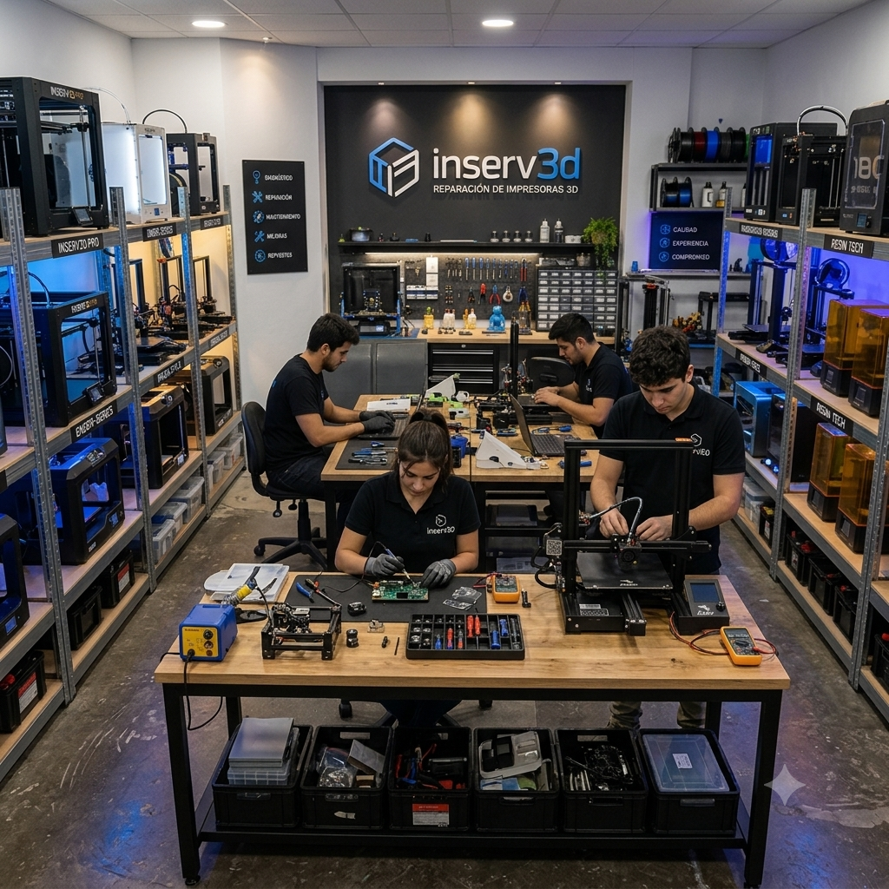

Conocé INSERV3D
Somos una empresa especializada en impresión 3D, mantenimiento, reparación y asesoramiento técnico. Nuestro objetivo es brindar soluciones confiables tanto para quienes recién comienzan como para usuarios con experiencia.

Nuestra historia
Todo comenzó con un proyecto cuyo objetivo era ayudar a quienes estaban dando sus primeros pasos en el mundo de la impresión 3D. Detectamos que muchas personas necesitaban orientación para elegir, configurar y mantener sus equipos.

Nuestro crecimiento
Nuestros primeros pasos fueron con pequeñas asesorías y la demanda fue creciendo por lo que nos llevó a agrandar el equipo y ofrecer nuevos servicios.

Nuestra mision
Nuestra misión en INSERV3D es brindar a nuestros clientes todas las herramientas y el acompañamiento necesario para que puedan iniciar y desarrollar sus proyectos con confianza. Para lograrlo, ponemos a disposición la experiencia de nuestros especialistas y técnicos, ofreciendo asesoramiento, mantenimiento y soluciones personalizadas que les permitan alcanzar sus objetivos con eficacia, compromiso y seriedad.
Servicio Técnico Especializado

En INSERV3D contamos con un servicio técnico especializado en impresión 3D, preparado para realizar diagnósticos, mantenimiento preventivo y reparación de equipos. Nuestro objetivo es brindar soluciones rápidas y confiables para que nuestros clientes puedan continuar desarrollando sus proyectos con la tranquilidad de contar con un equipo profesional.
- Mantenimiento preventivo y correctivo de impresoras 3D.
- Diagnóstico y reparación de fallas electrónicas y mecánicas.
- Calibración, configuración y puesta a punto de equipos.
- Asesoramiento técnico personalizado para cada proyecto.
Contruyendo el futuro capa por capa

En INSERV3D trabajamos dia a dia para ofrecer soluciones confiables con compromiso y profesionalismo motivados por la pasion por las impresoras 3D que todos compartimos. Seguimos construyendo el futuro capa por capa junto a nuestros clientes.